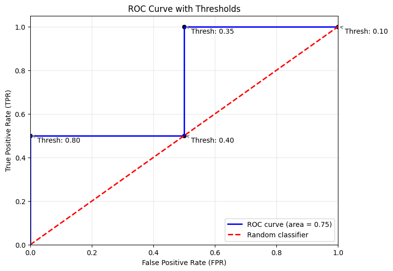

3.4. Metrics and scoring: quantifying the quality of predictions#
3.4.1. Choose score function?#
Which scoring function should I use?
Which scoring function is a good one for my task?
It is useful to distinguish two steps:
Predicting
Decision making
Predicting: Usually, the response variable is a random variable, in the sense that there is no deterministic function of the features. $Y=g(X)$ , we usually choose a stat. property as the result. Such as mean,median,quantile
It is best used for both:
as loss function for model training
as metric/score in model evaluation and model comparison.
Decision Making:The result is a single outcome,There are many scoring functions which measure different aspects of such a decision, most of them are covered with or derived from the metrics.confusion_matrix.
functional |
scoring or loss function |
response |
prediction |
|---|---|---|---|
Classification |
|||
mode |
zero-one loss |
multi-class |
|
Regression |
|||
mean |
mean_squared_error |
all reals |
|
median |
mean_absolute_error |
all reals |
|
quantile |
pinball_loss |
all reals |
|
$R^2$ gives the same ranking as squared error.
3.4.2. Scoring API overview#
There are 3 different APIs for evaluating the quality of a model’s predictions:
Estimator score method: Estimators(model) have a score method providing a default evaluation criterion.
classifiers ： accuracy
regressors：$R^2$
Scoring parameter: Model-evaluation tools that use cross-validation (such as model_selection.GridSearchCV..) rely on an internal scoring strategy.
scoringparam.Metric functions: The sklearn.metrics module implements functions assessing prediction error for specific purposes.
3.4.4. classification metrics#
sklearn.metrics
3.4.4.15 Receiver operating characteristic (ROC)#
二分类评价
import numpy as np
from sklearn.metrics import roc_curve, auc
import matplotlib.pyplot as plt
y = np.array([0, 0, 1, 1]) #
scores = np.array([0.1, 0.4, 0.35, 0.8])
# roc曲线点
fpr, tpr, thresholds = roc_curve(y, scores, pos_label=1) # pos_label为阳性标签
print("FPR:", fpr)
print("TPR:", tpr)
print("Thresholds:", thresholds)
FPR: [0. 0. 0.5 0.5 1. ]
TPR: [0. 0.5 0.5 1. 1. ]
Thresholds: [ inf 0.8 0.4 0.35 0.1 ]
结果解释：
阈值为0.8时，表示有0.8及以上概率分为阳性。此时FPR=0.0，TPR=0.5。抓到了一半的阳性，且没有误报。
阈值为0.4时，表示有0.4及以上概率分为阳性。此时FPR=0.5，TPR=1.0。抓到了所有阳性，但误报了一半的阴性。
# 计算AUC值
roc_auc = auc(fpr, tpr)
print("AUC:", roc_auc)
# 绘制ROC曲线
plt.figure(figsize=(8, 6))
# 绘制 ROC 曲线
plt.plot(fpr, tpr, color='blue', lw=2, label='ROC curve (area = %0.2f)' % roc_auc)
# 绘制随机分类器对角线
plt.plot([0, 1], [0, 1], color='red', lw=2, linestyle='--', label='Random classifier')
# --- 新增：循环标注阈值 ---
for i, thresh in enumerate(thresholds):
# 跳过第一个起始阈值（通常是 max(score)+1），避免标注重叠
if i == 0: continue
# 标出点
plt.scatter(fpr[i], tpr[i], color='black', s=30)
# 在点旁边标注具体的阈值数值
plt.annotate(f'Thresh: {thresh:.2f}',
xy=(fpr[i], tpr[i]),
xytext=(10, -10), # 文字偏移量
textcoords='offset points',
arrowprops=dict(arrowstyle='->', color='gray'))
plt.xlim([0.0, 1.0])
plt.ylim([0.0, 1.05])
plt.xlabel('False Positive Rate (FPR)')
plt.ylabel('True Positive Rate (TPR)')
plt.title('ROC Curve with Thresholds')
plt.legend(loc="lower right")
plt.grid(alpha=0.3)
plt.show()
AUC: 0.75

思想：滑动阈值
分类模型输出样本属于某一类别的概率。比如放贷模型，输出某人违约的概率是0.7。
但是实际决策可以进行人为调整，可以设定一个阈值，即允许最大的违约概率。
比如阈值设为0.6，则概率大于0.6的样本被判为违约，概率小于0.6的样本被判为不违约。
这表示对模型风险的容忍度。阈值为0.1表示非常保守，尽量遵守模型建议；阈值为0.9表示非常激进，愿意承担较大风险。
ROC曲线记录下不同阈值下的FPR和TPR，从而评估模型在不同风险容忍度下的表现。
3.4.6. Regression metrics#
The sklearn.metrics module implements several loss, score, and utility functions to measure regression performance. Some of those have been enhanced to handle the multioutput case (): mean_squared_error, mean_absolute_error, r2_score…
These functions have a multioutput keyword argument:
3.4.6.1. R² score, the coefficient of determination#
The r2_score function computes the coefficient of determination through the proportion of explained variance. $$R² = 1 - \frac{\sum_{i=1}^{n}(y_i - \hat{y}i)^2}{\sum{i=1}^{n}(y_i - \bar{y})^2}$$
$(-\inf, 1]$
R^2 = 1 ：perfect
R^2 = 0 ：imperfect, ability as the mean predict (all $\hat{y}_i = \bar{y}$)
R^2 < 0 ：terrible
$denominator=0$:
NaN -> 1.0
-inf -> 0.0
from sklearn.metrics import r2_score
y_true = [3, -0.5, 2, 7]
y_pred = [2.5, 0.0, 2, 8]
r2_score(y_true, y_pred)
0.9486081370449679
y_true = [[0.5, 1], [-1, 1], [7, -6]]
y_pred = [[0, 2], [-1, 2], [8, -5]]
r2_score(y_true, y_pred, multioutput='variance_weighted')
r2_score(y_true, y_pred, multioutput='uniform_average')
r2_score(y_true, y_pred, multioutput='raw_values')
r2_score(y_true, y_pred, multioutput=[0.3, 0.7])
0.9253456221198156
3.4.6.2 others#
Mean Absolute Error (MAE) $$ MAE = \frac{1}{n} \sum_{i=1}^{n} \left| y_i - \hat{y}_i \right| $$
Mean Squared Error (MSE) $$ MSE = \frac{1}{n} \sum_{i=1}^{n} (y_i - \hat{y}_i)^2 $$
Median Absolute Error (MedAE) $$ MedAE = \text{median} \left( \left| y_i - \hat{y}_i \right| \right) $$
MedAE : outliers不敏感
Max Error $$ Max Error = \max \left( \left| y_i - \hat{y}_i \right| \right)
3.4.6.12. Visual evaluation of regression models#
PredictionErrorDisplay class allows to visually inspect the prediction errors of a model in two different manners.